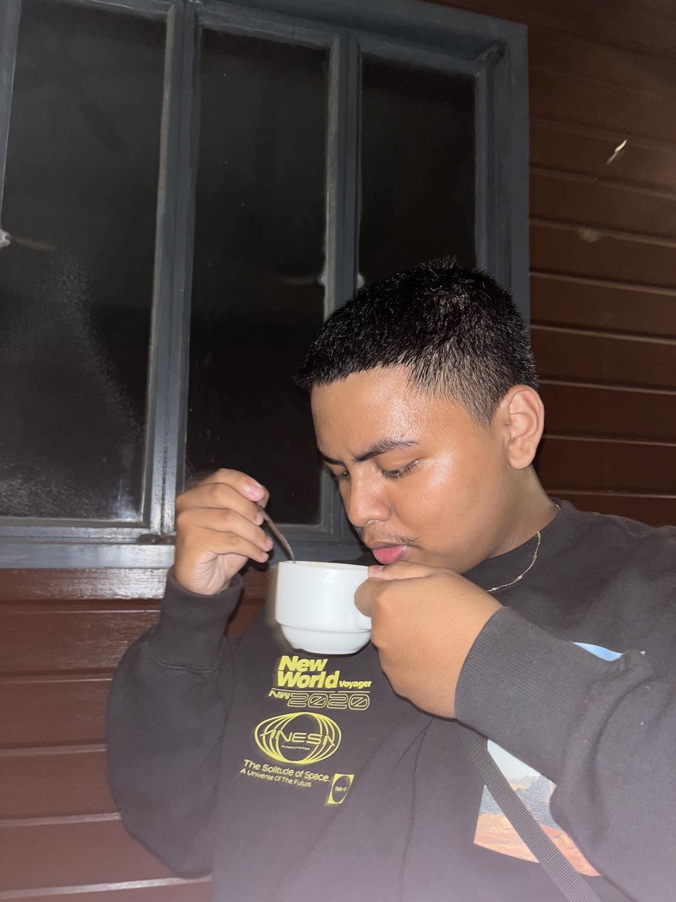

Welcome to my website!
Hello, my name is Carlso Miguel Arboaldo. I am currently 20 years old and have achieved significant milestones in my educational journey. I completed my elementary education at Manila Central University in Caloocan, followed by my high school education at Santa Lucia High School. For my senior high school, I attended Springfield School. Presently, I am in my second year at National University, pursuing a degree in Bachelor of Science in Information Technology with a specialization in Multimedia and Internet Technology (BSIT-MI). My academic pursuits are complemented by a range of skills, including proficiency in basic image editing. I have a keen interest in exploring the diverse world of clothing brands and related industries. I am enthusiastic about expanding my knowledge and skills in various domains, and I am committed to academic and personal growth.
Carlos Arbolado
Address: Santa Marcela ,Santa Lucia ,Novaliches ,Quezon City
Email: arboladocarlosmiguel@gmail.com
Education:
Elementary School: Manila Central University
High School: Santa Lucia High School
Senior High School: Springfield School Of Novaliches
College: National University
.
NU Fairview Library Management System
Our team has diligently worked on the development of the NU Fairview Library Management System, a significant project that spanned over a month. Despite facing challenges due to limited prior knowledge in this domain, we are proud to present a functional system that allows users to seamlessly add and delete books.
Key Features
Book Addition: Users can easily input new books into the system, streamlining the process of cataloging and managing the library's collection.
Book Deletion: The system offers a user-friendly interface for removing books, ensuring accuracy and efficiency in maintaining the library's inventory.
System Optimization: Our team has dedicated considerable effort to refine and optimize the system, making it more user-friendly and robust.
While this project presented its own set of challenges, it has been a valuable learning experience for our team. We look forward to feedback and suggestions to further enhance the NU Fairview Library Management System.
Connect with us on social media
FacebookContact us via email
Email